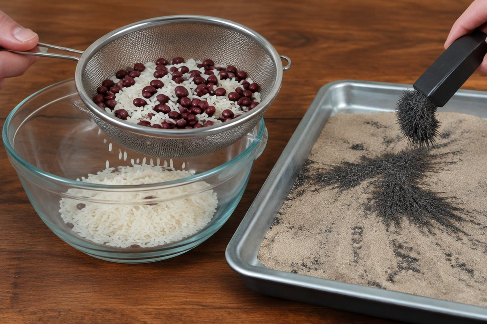

섞인 물질을 어떻게 다시 나눌까?

콩, 팥, 좁쌀이 한 그릇에 뒤섞였어요. 하나하나 손으로 골라내려면 너무 오래 걸리겠죠? 더 쉬운 방법이 있을까요?
혼합물이란?
두 가지 이상의 물질이 섞여 있는 것을 '혼합물'이라고 해요. 섞여 있어도 각 물질의 성질은 그대로 남아 있어요.
김밥, 팥빙수, 잡곡, 바닷물(물+소금)도 모두 혼합물이에요. 그래서 각 물질의 성질 차이를 이용하면 다시 나눌(분리할) 수 있어요.
콩·팥·좁쌀을 섞어도 콩은 콩대로, 팥은 팥대로 크기와 색이 그대로예요.
알갱이 크기로 나누기 – 체
알갱이의 크기가 다른 혼합물은 '체'로 나눌 수 있어요. 체의 눈보다 작은 알갱이는 빠져나가고 큰 알갱이는 체에 남아요.
눈의 크기가 다른 체를 차례로 쓰면 콩, 팥, 좁쌀을 모두 나눌 수 있어요.
모래사장에서 체로 모래를 거르면 조개껍데기처럼 큰 알갱이가 체에 남아요.
자석으로 나누기
철로 된 물체가 섞여 있으면 자석으로 쉽게 골라낼 수 있어요. 자석에 붙는 성질을 이용한 것이지요.
재활용 공장에서는 큰 자석으로 철 캔과 알루미늄 캔을 나눠요.
모래 속에 섞인 철 가루는 자석을 대면 자석에 달라붙어 나와요.
물에 녹는 성질로 나누기 – 거름
소금과 모래가 섞여 있으면 먼저 물을 부어 저어요. 소금은 물에 녹고 모래는 녹지 않아요.
이것을 거름종이를 올린 깔때기에 부으면 모래는 거름종이 위에 남고 소금물만 아래로 빠져요. 이렇게 거름종이로 거르는 것을 '거름'이라고 해요.
커피를 내릴 때 커피 가루는 필터에 남고 커피 물만 내려오는 것도 거름이에요.
물을 날려 보내 나누기 – 증발
거름으로 얻은 소금물을 가열하거나 햇볕에 오래 두면 물이 증발해 날아가고 하얀 소금만 남아요. 가열할 때는 소금물이 튈 수 있으니 꼭 어른과 함께하고, 햇볕에 며칠 두는 방법이 더 안전해요.
바닷가 염전에서는 바닷물을 햇볕과 바람에 증발시켜 소금을 얻어요.
핵심 낱말
- 혼합물
- 두 가지 이상의 물질이 섞여 있는 것
- 분리
- 섞여 있는 물질을 나누는 것
- 체
- 알갱이 크기 차이로 물질을 나누는 도구
- 거름
- 거름종이로 녹지 않은 물질을 걸러 내는 방법
- 증발
- 물이 표면에서 수증기가 되어 날아가는 것
한 줄 정리
- 혼합물은 여러 물질이 섞인 것이고, 섞여도 각 물질의 성질은 그대로예요.
- 크기는 체, 철은 자석, 녹는 성질은 거름으로 나눠요.
- 소금물의 물을 증발시키면 소금을 얻을 수 있어요.
학교 교육과정 연결
2015 개정 교육과정에서는 4학년 '혼합물의 분리' 단원에서 배웠는데, 2022 개정 교육과정부터는 5~6학년에서 배워요.
- [6과05-01] 알갱이의 크기가 다른 고체 혼합물과 골고루 섞이지 않는 액체 혼합물을 분리할 수 있다.
- [6과05-02] 물에 용해되는 성질을 이용하여 고체 혼합물을 분리하고, 물을 증발시켜 물에 용해된 고체 물질을 분리할 수 있다.